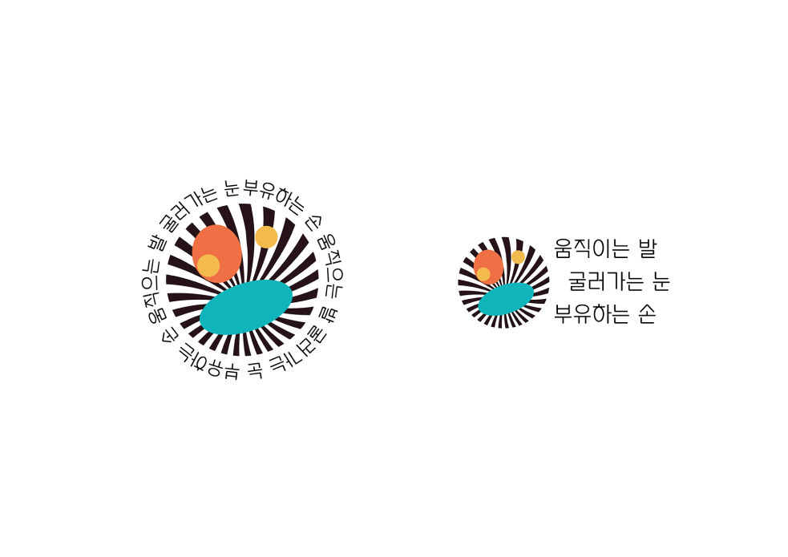
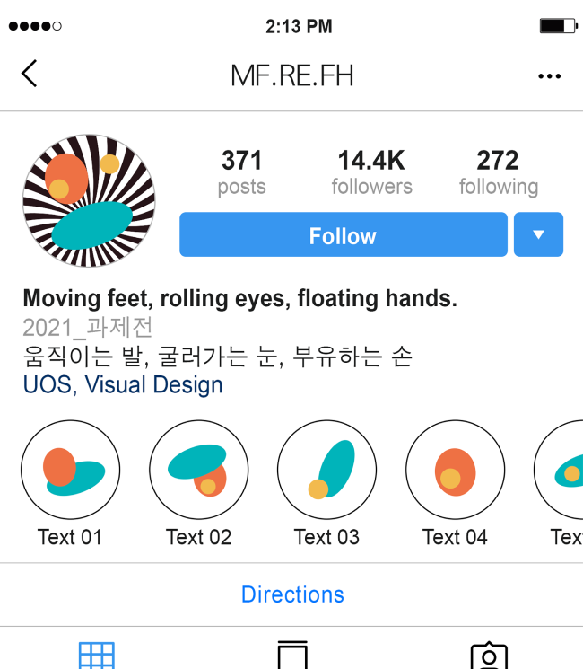
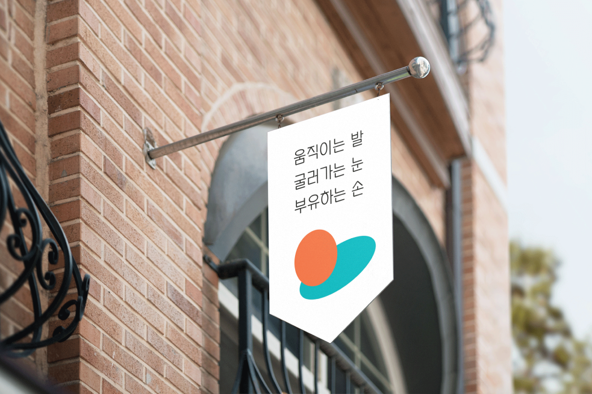
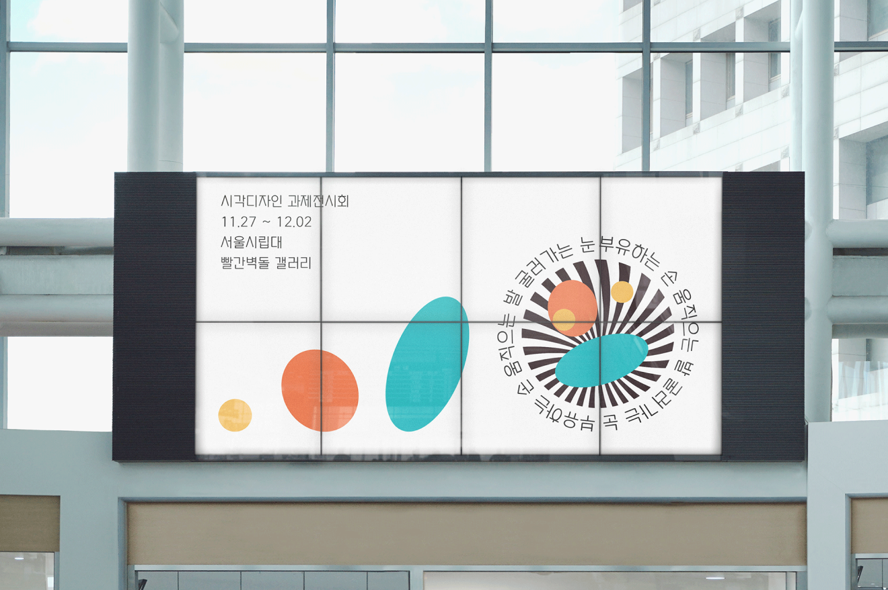

Project
Contact
jinseongbe@gmail.com
Designer
Group Identity
박진성
움직이는 발, 굴러가는 눈, 부유하는 손
Category
-
움직이는 발, 굴러가는 눈, 부유하는 손에서 각 신체부위의 비율에 맞는 원과 타원을 사용하여 형태를 추상화하고
그 형태들을 하나로 모아 혼란스러운 얼굴로 형상화 하였다.
   